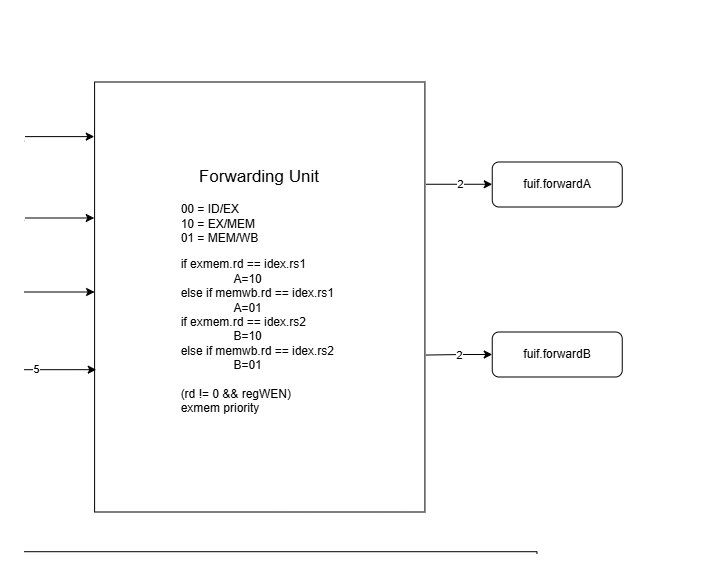

01
Forwarding decisions
Compare source and destination registers to select a bypass path from EX/MEM or MEM/WB.

CPU design · Purdue ECE 437 · Aug 2026 to present In progress
A 32-bit RISC-V CPU in SystemVerilog, from a single-cycle baseline to an integrated five-stage pipeline with forwarding, hazard handling, and a two-bit branch predictor. Development is ongoing, with Lab 7 performance comparisons available across four memory-latency settings.
Single-cycle and pipelined RISC-V processors, with a branch-prediction extension.
Improve execution time while preserving correct behavior through data hazards, branches, and memory stalls.
Integrated forwarding and hazard control, resolved halt behavior, and compared the designs using simulation and synthesis timing.
Up to 1.29× faster mergesort execution. Branch prediction reduced loop CPI by up to 45.3% in the measured tests.
Contribution in this two-person project: pipeline interfaces, forwarding unit, and hazard-unit testbench. The partner developed assembly test programs, the hazard unit, and forwarding-unit testbench. Each unit was independently tested by the other team member.
Five stages connected by pipeline registers, with forwarding, hazard handling, and control for branches, memory stalls, and halt.

The pipeline improved estimated execution time on mergesort. The branch-prediction extension reduced CPI on a separate loop benchmark.
5,409 dynamic instructions. Lower time is better.
| LAT | Single (µs) | Pipeline (µs) | Speedup |
|---|---|---|---|
| 0 | 145.23 | 120.77 | 1.20× |
| 2 | 275.37 | 233.45 | 1.18× |
| 6 | 550.74 | 436.13 | 1.26× |
| 10 | 826.11 | 638.80 | 1.29× |
107 dynamic instructions. Lower CPI is better.
| LAT | Pipeline CPI | With BP | Reduction |
|---|---|---|---|
| 0 | 1.981 | 1.084 | 45.3% |
| 2 | 3.458 | 2.112 | 38.9% |
| 6 | 6.411 | 4.168 | 35.0% |
| 10 | 9.364 | 6.224 | 33.5% |
LAT is the memory-latency setting. Execution time = cycles / effective Fmax, with effective Fmax = min(MAIN / 2, CPUCLK). Timing values at LAT=6 and LAT=10 reuse LAT=2 results, as recorded in the source logs. The two tables use different benchmarks.
Unit tests passed, but the connected pipeline kept fetching instructions past the end of the program.
Halt, flush, and enable signals behaved correctly in isolation but failed to stop the integrated processor.
Traced full-datapath waveforms and reworked halt control so in-flight instructions could finish before the processor stopped.
The simulation terminated cleanly. Follow-up checks covered connected stages and complete programs.
 BeforePC and fetch continue past the program; the simulation does not terminate correctly.
BeforePC and fetch continue past the program; the simulation does not terminate correctly. AfterHalt propagates correctly and the run terminates.
AfterHalt propagates correctly and the run terminates.